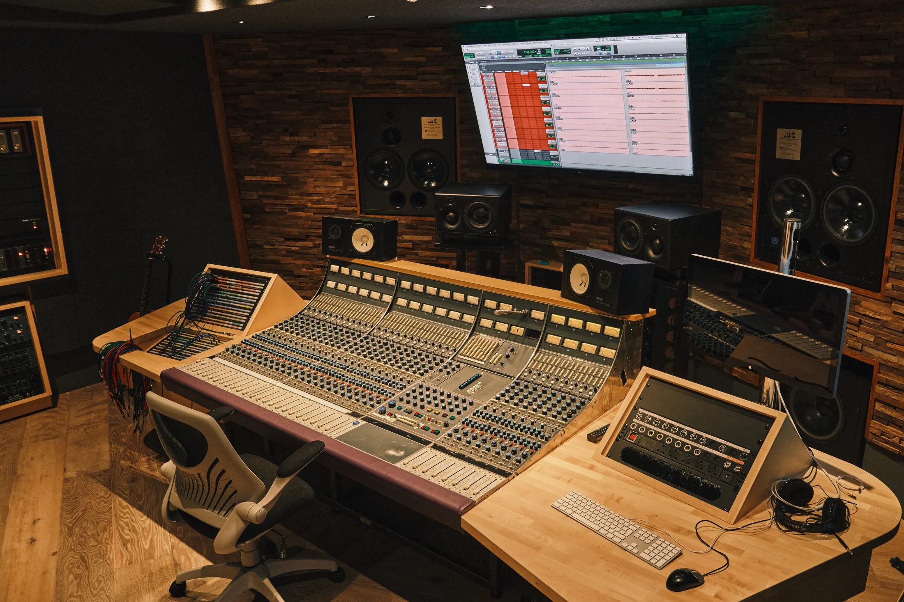

The finest mixing environment in the South of England — 1973 Neve 8068 in a John Flynn–designed room with ATC soffit-mounted monitors.
Mixing at Salvation Studios means working in a room built from the ground up for critical listening. The ATC SCM200ASL monitors, soffit-mounted in a John Flynn–designed room, allow you to hear every element of your mix with total clarity and confidence. The 1973 Neve 8068 console adds the warmth, depth, and character that analogue summing brings to even the most modern recording.
Our mixing sessions are available with or without an in-house engineer. Bring your own mixer and use the room on a dry hire basis, or work with one of our resident engineers who know the desk and the room inside out.

The Neve 8068's preamps and summing bus add warmth, depth, and three-dimensionality that digital-only workflows simply cannot replicate.
John Flynn's room design means what you hear in this room is what listeners will hear everywhere else — from headphones to club systems.
Access to a source-listed collection of analogue compression, EQ, and reverb, including Pultec EQM-1S3, Urei 1176 LN Rev G, Tube-Tech CL 1B, Distressor, API 2500, EMT 140, Bricasti M7 and Lexicon PCM 80.
Tell us whether you need an in-house engineer, producer or dry-hire style access and the team will confirm the right session format.